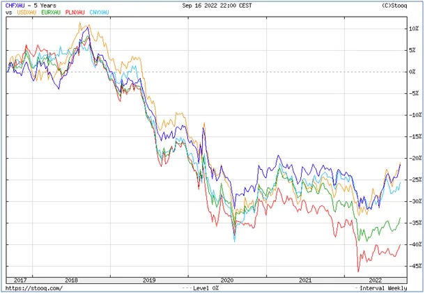

Wykres prawdy
Jest taki wykres, który oddaje w ułamku sekundy relacje między blokami gospodarczymi na świecie. To wykres wartości walut do złota. Im niżej, tym waluta mniej warta. Wykres ten (5 lat) pokazuje też, że z ostrym spadkiem mamy do czynienia od jesieni 2018.

Pandemia wiosną 2020 to tylko spekulacyjny incydent, pierwsze dno mamy latem 2020, po którym waluty leniwie odzyskiwały przez rok cząstkę straconej wartości. Na scenie mamy pięciu aktorów: niebieski frank szwajcarski, żółty dolar, zielone euro, błękitny (cyjan) waluta chińska i czerwona złotówka. Po lutym gwałtownie odzyskują wartość dolar i szwajcarski frank. Pozorny wolniejszy wzrost wartości euro to de facto spadek do dolara. Europa kupuje w USA drogie gaz, ropę i broń a ceny energii i produkcji gwałtownie rosną. Sojusze atlantyckie to następstwa zwycięstwa USA nad Niemcami i przejecie przez USA kontroli nad byłym Imperium Brytyjskim. Wbrew pozornym gestom przyjaźni miedzy USA i Europą trwa olbrzymie napięcie. Niemcy planując "europejską armię" w ramach UE miały nadzieję wyjść spod kontroli USA. Na wojnie traci najbardziej Europa, blok BRICS na wykresie reprezentuje chiński juan, który ucieka europejskiej walucie równie szybko jak dolar. Azjatyckie towary i żywność będą bardzo drogie, co szybko zmieni nastawienie wyborców w Europie.
USA właśnie cofnęły zakaz eksportu broni na Cypr co bardzo źle wpłynie na relacje Turcji z zachodem, w okresie dużego napięcia między Atenami i Ankarą to fatalna decyzja dla Europy. Przed nami zmiany, zmiany, zmiany.
Paweł Klimczewski
Źródło: https://stooq.com/q/?s=chfxau&d=20220916&c=5y&t=l&a=ln&b=1&r=usdxau+eurxau+plnxau+cnyxau